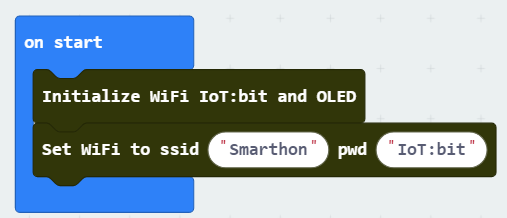
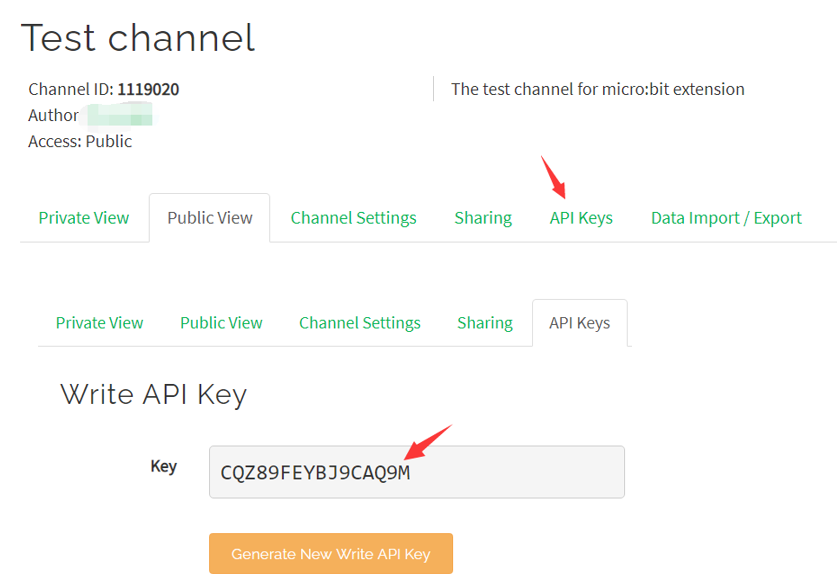
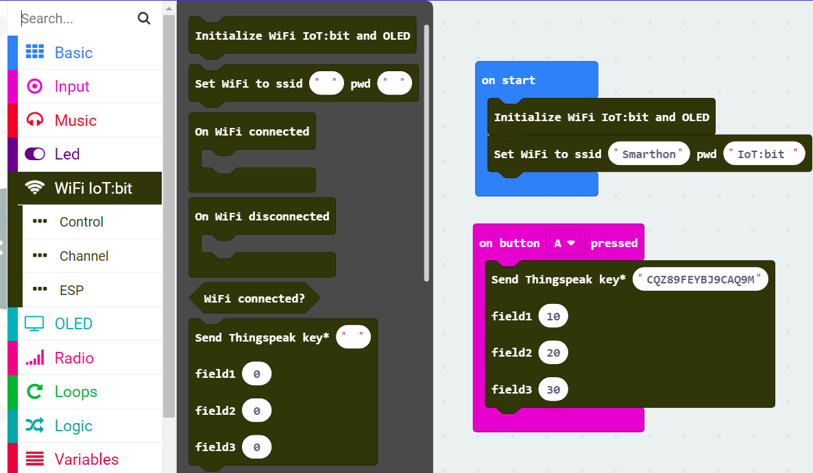
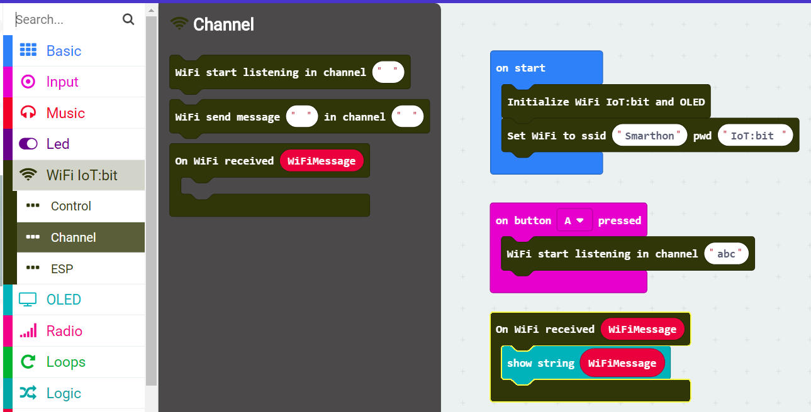

6. QuickStart¶
6.1. Get ready to programming¶
Go to MakeCode,create a new progject

Give the project a name

Click the more and choose extensions in the pull down menu

Input the URL of the extension for IoT:bit, then click on it to import the extension

Check the extension is exist in the list

That’s all for the preparation to use the IoT:bit
6.2. Connect to Wifi¶
Click on the WiFi IoT:bit and drag the necessary block to the inside of flow-control block. We should initialize the Wifi and OLED module first, then try to connect to the wireless AP.

Fill in the SSID of AP and the password 
Download the Hex file to computer, use USB to connect the Mirco:bit, and copy the Hex file to Mirco:bit. Wait until the transmission is finish.

Insert the ESP Module, OLED Module and Mirco:bit to the IoT:bit expansion board. Pay attention to the direction of the Micro:bit, the LED array should be face to us as figure.

Plug in the power cable to IoT:bit, switch on the power, the oled screen will show the information and the IoT:bit is now connected to the Wifi.

6.3. Use the ThingSpeak¶
IoT:bit extension provides API block for uploading data to ThingSpeak platform.
To use the API, it is necessary for the API Keys to access the channel.
Open the channel and select the “API Keys” tab, it will show the “Write API Key”

After get the API Key, fill it into the block with the data to be upload. It can upload data to first three field in the channel at the same times. 
6.4. Use the IFTTT¶
WIP
6.5. Use the chatroom¶
IoT:bit can communicate with other devices though internet, including groups of IoT:bit, smartphone with apps, and even web browser on PC. After connected to the internet, those devices can send and receive message when they are in the same channel.

The set of blocks for chatroom is locale in the Control subcategory, after start the wifi remote control(WAN), the device will become a receiver and create a chatroom, other devices can send message to host though URL.

When the message is received, it will become a variable in the block, user can read the variable and perform different action base on it.
6.6. Use the Channel¶
Some of the project may require multi of device received and execute same command at the same time. In this situation, the receiver should be stay in the same chatroom. So, the IoT:bit provide another set of blocks that can set the chatroom manually.

Switch to the subcategory Channel, use the block ”Wifi start listening in channel XXX” to become a receiver to specified channel. When received any message from the channel, the “On Wifi received WifiMessage” block will return a variable for user to access. 
6.7. Use the ESP Servo¶
On the IoT:bit, there are reserved 3 servo port for user to control the servo motor though ESP chip. User only can use the IoT:bit’s Servo block in extension to control the servo on those port, but not the general servo control block.